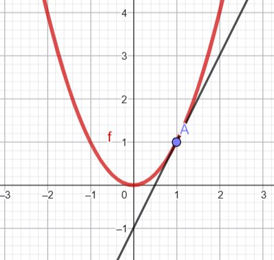
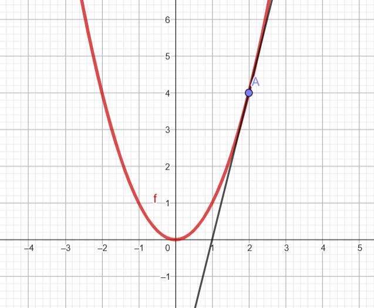
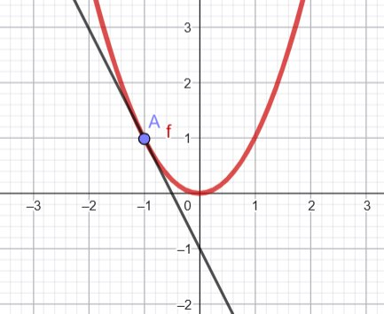
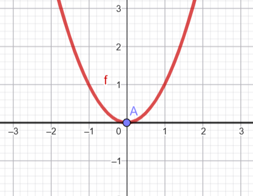

Derivando una primera función \(y=x^2\)
Observa las siguientes imágenes de la gráfica de la función \(y=x^2\). En cada una de ellas aparece dibujada la recta tangente en un punto concreto.
En cada caso, estima a ojo la pendiente de la recta tangente y, por tanto, el valor aproximado de la derivada en ese punto.
-
Punto \(x=1\).

Estima el valor de \(f'(1)\): __________
-
Punto \(x=2\).

Estima el valor de \(f'(2)\): __________
-
Punto \(x=-1\).

Estima el valor de \(f'(-1)\): __________
-
Punto \(x=0\).

Estima el valor de \(f'(0)\): __________
Recoge ahora tus resultados en la siguiente tabla:
| \(x\) | \(-1\) | \(0\) | \(1\) | \(2\) |
|---|---|---|---|---|
| \(f'(x)\) |
A partir de estos valores, responde:
- ¿Qué relación observas entre el valor de \(x\) y el valor de la derivada?
- Completa la frase: “Parece que la derivada de \(x^2\) en un punto \(x\) es __________”.
- Conjetura una fórmula para la función derivada de \(f(x)=x^2\).
Conclusión: ___________________________________________
La función derivada \(f'(x)\)
Para una función no lineal de ecuación \(y=f(x)\), las pendientes de las rectas tangentes en los distintos puntos de la gráfica cambian continuamente.
Nuestro objetivo es determinar una función pendiente que nos permita, al sustituir \(x\) por un valor concreto, calcular la pendiente de la recta tangente a la gráfica en ese punto.
Consideremos una función general \(y=f(x)\). Tomamos dos puntos de su gráfica:
\(A=(x,f(x))\) y \(B=(x+h,f(x+h))\).
La recta que pasa por los puntos \(A\) y \(B\) es una recta secante. Su pendiente es
\[ \frac{f(x+h)-f(x)}{(x+h)-x}. \]
Como \((x+h)-x=h\), podemos escribir:
\[ \frac{f(x+h)-f(x)}{h}. \]
Ahora imaginemos que el punto \(B\) se aproxima progresivamente al punto \(A\). Esto equivale a hacer que \(h\) se acerque cada vez más a \(0\).
A medida que \(B\) se aproxima a \(A\), la recta secante se aproxima a la recta tangente a la gráfica en \(A\). Por tanto, la pendiente de la tangente se obtiene como el valor límite de
\[ \frac{f(x+h)-f(x)}{h} \]
cuando \(h\) tiende a \(0\).
Como esta pendiente depende del valor de \(x\), obtenemos una nueva función que asigna a cada punto de la gráfica la pendiente de su recta tangente. Esta función recibe el nombre de función derivada.
Función derivada
La función derivada de una función \(f\) se define mediante
\[ f'(x)=\lim_{h\to 0}\frac{f(x+h)-f(x)}{h}. \]El valor \(f'(x)\) representa la pendiente de la recta tangente a la gráfica de \(y=f(x)\) en el punto \((x,f(x))\).
Applet diseñado por Eduardo Timón Moliner
Notación: \(f'\) o \(\frac{dy}{dx}\)
Derivación y notación
La derivación es el proceso mediante el cual obtenemos la derivada de una función, es decir, su función pendiente.
Notación: si tenemos una función \(f(x)\), entonces \(f'(x)\) representa su función derivada.
Si la función se expresa mediante la variable \(y\) en función de \(x\), es habitual escribir la derivada como
\[ y' \qquad \text{o} \qquad \frac{dy}{dx}. \]Observaciones sobre la notación:
-
\(\displaystyle \frac{dy}{dx}\) se lee «derivada de \(y\) respecto de \(x\)».
-
Aunque su escritura recuerda a la de una fracción, \(\displaystyle \frac{dy}{dx}\) no debe interpretarse, en este contexto, como una fracción ordinaria. Es una notación que representa la derivada de \(y\) respecto de \(x\).
-
De forma análoga,
\[ \frac{d}{dx}\bigl(f(x)\bigr) \]significa «derivar \(f(x)\) respecto de \(x\)».
Derivada de \(x^n\)
Regla de la potencia
Si \(n\) es un número real y tenemos la función
\[ f(x)=x^n, \]su derivada se obtiene multiplicando por el exponente y disminuyendo dicho exponente en una unidad:
\[ \boxed{f'(x)=n x^{n-1}}. \]Por tanto, podemos escribir de forma abreviada:
\[ \frac{d}{dx}\left(x^n\right)=n x^{n-1}. \]Ejemplo: para derivar
\[ f(x)=x^5, \]
multiplicamos por el exponente \(5\) y reducimos el exponente en una unidad:
\[ f'(x)=5x^{5-1}=5x^4. \]
\( (f(x)+g(x))'\)
Derivada de una suma
La derivada de una suma de funciones es igual a la suma de sus derivadas.
Si
\[ h(x)=f(x)+g(x), \]entonces
\[ \boxed{h'(x)=f'(x)+g'(x)}. \]De forma equivalente:
\[ \frac{d}{dx}\left(f(x)+g(x)\right) = f'(x)+g'(x). \]Deriva la función \(f(x)=x^3+x^2\)
Derivamos cada término por separado:
\[ f'(x)=3x^2+2x. \]\( (kf(x))'\)
Derivada de una constante por una función
Si una función está multiplicada por una constante \(k\), la constante puede mantenerse delante al derivar.
Si
\[ h(x)=k\,f(x), \]donde \(k\) es una constante, entonces
\[ \boxed{h'(x)=k\,f'(x)}. \]De forma equivalente:
\[ \frac{d}{dx}\left(k\,f(x)\right) = k\,f'(x). \]Deriva la función \(f(x)=4x^5\)
Mantenemos la constante \(4\) y derivamos \(x^5\):
\[ f'(x)=4\cdot 5x^4=20x^4. \]A practicar
-
Calcula \(f'(x)\) para cada una de las siguientes funciones:
- \(f(x)=x^4\)
- \(f(x)=3x^2\)
- \(f(x)=5x^3\)
- \(f(x)=x^3+2x\)
- \(f(x)=7-3x^2\)
- \(f(x)=x^2+4x-6\)
- \(f(x)=x^4+2x^2-3x+5\)
- \(f(x)=4x^5-7x^3\)
- \(f(x)=2-5x^{-2}\)
- \(\displaystyle f(x)=\frac{3x+2}{x^2}\)
- \(\displaystyle f(x)=\frac{x^4-2}{x}\)
- \(\displaystyle f(x)=\frac{x^3+2x-5}{x}\)
-
Calcula la pendiente de la recta tangente a cada función en el valor de \(x\) indicado:
- \(y=x^3\), en \(x=2\).
- \(\displaystyle y=\frac{12}{x^2}\), en \(x=2\).
- \(y=3x^2-4x+1\), en \(x=-1\).
- \(y=5x-4x^{-1}\), en \(x=2\).
- \(\displaystyle y=\frac{x^2+3}{x^2}\), en \(x=3\).
- \(\displaystyle y=\frac{x^3-2x+4}{x^2}\), en \(x=-2\).
Derivada con calculadora
 |
 |